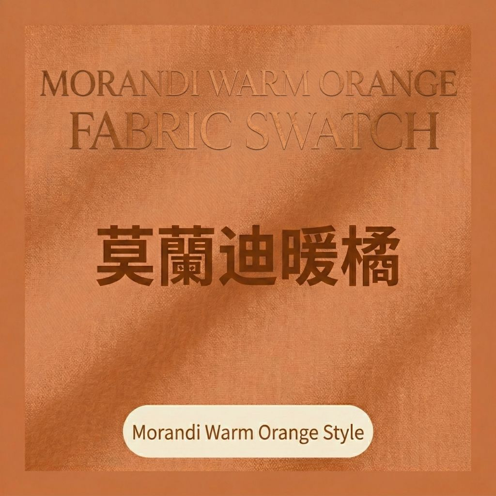
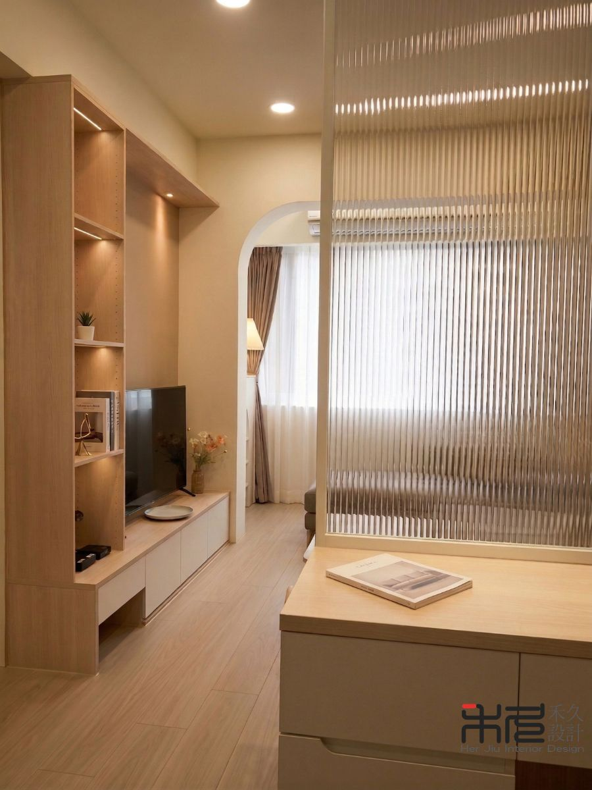
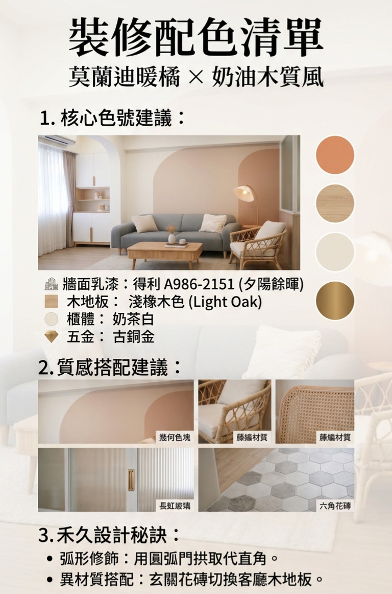
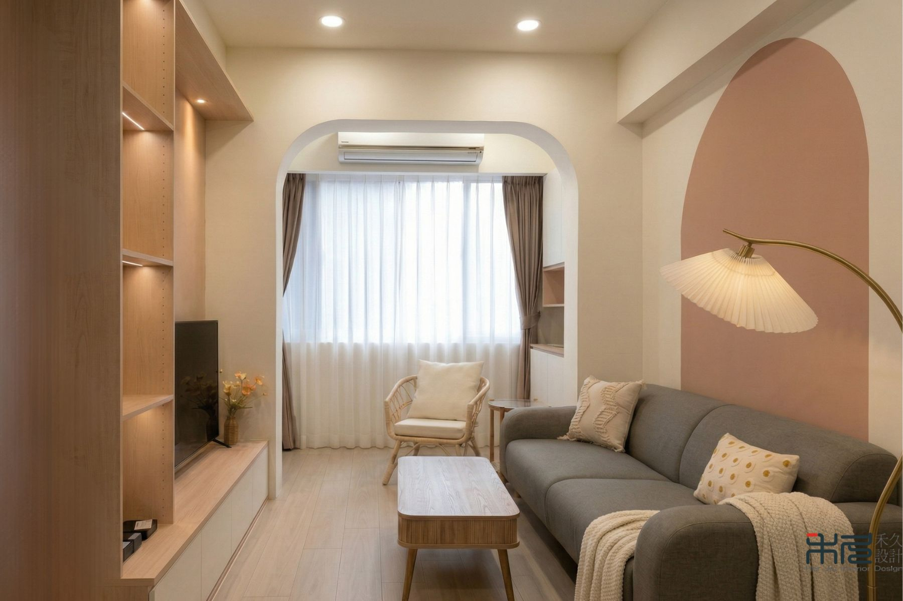

在繁忙的城市生活中，我們總希望回到家就能感受到暖意。
「奶油風（Cream Style）」在近年大受歡迎，但 禾久室內設計 在規劃時，會更進一步地加入「莫蘭迪暖橘」作為靈魂跳色。這不僅能提升空間的明亮度，更能為家注入一種如夕陽餘暉般的視覺包覆感。
1. 溫柔色調的黃金比例

奶油風的核心在於「去銳角化」與「低對比」。
我們選用的 得利 A986-2151（夕陽餘暉），並非亮眼的純橘色，而是帶有灰調的橘色。
這種顏色能與室內的奶茶色櫃體完美交融，讓空間呈現出一種既活潑又沉穩的氛圍。
2. 精確配色清單
| 項目 | 規格與細節 | 設計建議 |
|---|---|---|
| 主牆面 | 得利 (Dulux) A986-2151 | 用於客廳主牆或餐廳局部牆面，透過色塊創造視覺焦點，定調空間氛圍。 |
| 地板 | 淺橡木色 (Light Oak) | 選用淺木質地坪，與暖橘色系傢俱呼應，維持空間整體的輕盈感與通透度。 |
| 五金細節 | 古銅金 (Antique Brass) | 作為精緻亮點，在暖色基底中適度點綴，強化細膩的都會輕奢質感。 |

3. 禾久私藏秘訣：圓弧工法與異材質
為了展現奶油風的極致溫柔，禾久建議在硬裝上大量運用「圓弧修飾」。
無論是樑柱的收邊、或是天花板的轉折，圓弧線條能有效消弭空間的壓迫感。

此外，在玄關落塵區，我們推薦使用「六角花磚」，與室內木地板進行平接處理。這種異材質的切換，不僅定義了空間機能，更展現了屋主對細節的講究。

4. 加分細節：讓光影成為溫度的載體

色彩需要光影來催化。我們建議搭配 3000K 的溫潤黃光，並在圓弧天花內嵌 線性燈帶。
當光線洗過莫蘭迪暖橘牆面時，色彩會呈現出深淺不一的層次感，如同夕陽滲透進室內，即便在陰天，家依然擁有最舒適的溫度。
5. 軟裝搭配建議
想讓層次更豐富？試著在空間中加入：
- 亞麻材質： 米白色的亞麻窗簾，能過濾出柔和的光。
- 長虹玻璃： 運用在屏風或櫃門，保持視覺通透感的同時，也能藉由直紋線條延伸視覺高度。
- 綠意植栽： 擺上一盆龜背芋或琴葉榕，綠色與暖橘是絕佳的對比色，能瞬間帶出空間的生命力。